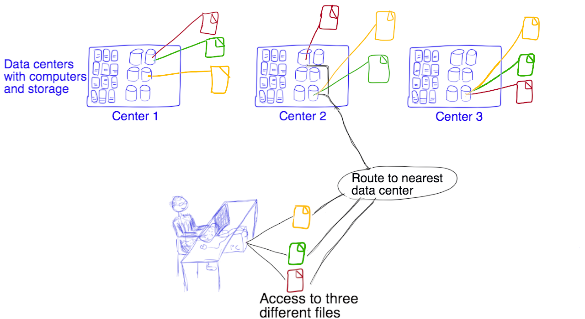

Module 6
Resource requirements for computing and storage
Sections of this module:
IntroductionStorage
On-Instance storage
Volume storage
Object storage
Volume (block) vs Object storage
Recommendations
How many cores do I need?
Can I benefit from several VMs?
Summary
Literature
View all sections on one page (Printer friendly)
Object storage
Object storage targets the problem of data growth: As more and more data is generated, storage systems have to grow at the same pace. What if you try to expand a block-based storage system beyond multiple terabytes? You may hit limitations with the storage infrastructure, and managing a huge storage becomes very complex. A per-file object-based storage instead is easier to manage and can be distributed.

An object in Object Storage systems is defined as data (typically a file) along with all its metadata, all bundled up as one object. Each object has a unique ID which is used by applications to retrieve the object. Unlike files in traditional hierarchical file systems, objects are stored in a flat structure. There is a pool of objects, and a given object is retrieved by presenting its object ID. Objects may be local or geographically distributed, but because they are in a flat structure (retrieved by their ID only), they are all retrieved exactly the same way.
Multiple copies of all object data is stored over a distributed system, while the storage still acts as one. Object Storage is highly fault tolerant through redundancy and distribution of data: If one or more nodes fail, the data can still be available — in most cases you as an end user will not even notice that a node was down. Object Storage therefore has a great data integrity! In most cases at least 3 copies of a file are stored across several nodes. You don’t have to do anything to maintain the multiple copies, this is done automatically for you. Object Storage also scales up nicely, and it is easy to access your files from anywhere with a variety of devices.
 The image above visualizes how 3 copies of your data are kept at different data centers, maybe even on different hard drives in the same data center. When you access the object store, you request a file by its ID, and it is automatically retrieved from the closest or more available data center.

While Object Storage has high data integrity through geographical distribution of files, it does not have a “traditional” dedicated backup system — it merely provides a means to increase availability and integrity of your data by keeping multiple copies.
In the OpenStack Object Store, you may get access to large amounts of storage. Ultimately, this is limited by the storage cluster size of about 40TB. You may upload as many files as you like, as long as your allocation is not exceeded. The size of the files is not limited, however due to limits in the http protocol it is not recommended to upload files larger than 1GB.

The NeCTAR trial account has a default of 10GB object storage allocation. When you lodge an application for resources, you have to specify the amount of object storage you require, otherwise you won’t receive any allocation for object storage.
Suitable use of object store
Object Storage is not a traditional file-system or real-time data storage system. It’s designed for mostly static data that can be retrieved, leveraged, and then updated if necessary. It is independent of a particular instance and can be updated and used without having any instance running. It is designed to be redundant and scalable.
Think about that dataset comprised of 2GB files that you read in and analyse many times, but in general it doesn’t change. Or the images you want to use on the cloud. Those are a couple examples of what’s perfect for Object Storage.
In general, the object store is great for data you write once and read many times, but not suitable for applications like databases. It’s the safest place to put your data on the NeCTAR Research Cloud as multiple redundant copies of your data are made, and it has great performance. You can access the object store from anywhere via the Internet, and data from Object Storage can be transferred to and from your instance with a variety of tools.
Swift
Swift is the component that provides object storage for the OpenStack framework which is used in the NeCTAR Research Cloud. With your credentials (which you can download from the Dashboard) you can request Swift to reserve and create storage (called containers or buckets) and upload/download files.
The object store can be accessed via the Dashboard, which provides a UI for the swift component. There are also other graphical clients which can be used to access the store, as we shall see in Module 7. It is also possible to use a command line client to access the object store, which is subject to Module 10.
Security Warning: Swift does NOT provide encryption of the data it stores. When you upload/download data to/from the object store, this will happen without encryption. If you have sensitive data that requires encryption you must encrypt the data files before upload.
In Module 7 we will learn a few ways how to connect to your object storage and copy objects to and from our object store. Module 8 will introduce a few tools that can be used for data encryption, and Module 10 will discuss the more advanced use of command line tools to access the object store.
For more information, please refer to the NeCTAR support website.

 This work is licensed under a
This work is licensed under a